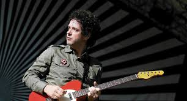

Biografía
Gustavo Adrián Cerati nació el 11 de agosto de 1959 en el barrio Barracas de Buenos Aires (Argentina); hijo primogénito de Juan José Cerati y Lilian Clarke.Era de ascendencia italiana por rama paterna e irlandesa por rama materna.Sus hermanas son Estela y Laura.A los seis años lo inscribieron en un colegio estatal y, a medida que aprendía a leer, descubrió los cómics y por consiguiente su primera gran pasión: el dibujo.ilian remembró que cada vez que Juan José volvía del trabajo, le compraba algún cómic de Superman, Tarzán o Flash, y de estos tomaba la base para crear historias, como Supercerebro, parecido a Superman, o el hombre alado Argos, un símil a Batman que sobrevolaba las ciudades de noche.A los nueve años sus padres le obsequiaron una guitarra criolla, momento en que crecería su interés por la música.Dos semanas después de ese hecho, tomó clases de guitarra con una profesora y luego de mudarse al barrio Villa Ortúzar las continuó con otro maestro.
Estudió la mayor parte de la primaria y por completo la secundaria en el colegio parroquial San Roque de Villa Urquiza. A los doce años creó una banda con dos amigos de otro barrio, y en 1976, con dieciséis, armó el grupo Koala que hacía música afroamericana y en el que asumió como guitarrista rítmico. A mediados de los años 1970, Juan José en sus viajes de trabajo a Miami, le traía de regalo vinilos de rock difíciles de conseguir en Argentina y en uno de ellos también le obsequió su primera guitarra eléctrica, una Gibson SG de color marrón.Formó parte del coro de su colegio, pero lo retiraron por indisciplina; en la parroquia del establecimiento compuso sus primeras canciones, como la religiosa «Desértico» que tocaba en misa y una navideña con base de rock progresivo que obtuvo el segundo lugar en un concurso musical —que tuvo a León Gieco y Carlos Cutaia en los jurados— organizado y emitido en Canal 9, en el que participó con Koala.A pesar de ser felicitado por uno de los sacerdotes, no lo reintegraron al coro.
Cerati estuvo en la banda de Manuela Bravo, luego entró a cumplir con el servicio militar obligatorio y en 1979 se inscribió en la Universidad del Salvador para estudiar publicidad.Al año siguiente, paralelo a sus estudios, participó en dos conjuntos diferentes: Existencia Terrenal (ET) de rocanrol y rhythm and blues, con quien descubrió a bandas como Sex Pistols y The Police, y Vozarrón de fusión que mezclaba jazz, rock y folclore, en el que era guitarrista, mas no el compositor.Junto a dos cantantes inglesas creó Savage, que tocaba soul y música disco en cabarés y fiestas judías.De dichas presentaciones Cerati recordó que improvisaba canciones lentas en el momento y hacía «versiones inventadas», pero a la gente solo le preocupaba bailar.Al mismo tiempo componía temas y era parte de un trío llamado Triciclo, con este grabó un reggae titulado «Ay, nena, ¿cómo vas a hacer?» difundido en un programa de Radio Rivadavia,el primero que registró en la Sociedad Argentina de Autores y Compositores (SADAIC).
En 1981, Cerati se unió a The Morgan por proposición de Zeta Bosio,compañero suyo en publicidad,con el que estrechó un fuerte lazo de amistad después de convivir con él en Punta del Este (Uruguay).Estuvieron un par de semanas en la banda y luego probaron otras dos agrupaciones de corta duración: Proyecto Erekto y Stress. Paralelamente, tenían una agencia de publicidad junto con Alfredo Lois y Ernesto Savaglio llamada Hergus & Herlois.Hacían boletines y encargos a marcas para reunir dinero; los textos los realizaba Bosio mientras que Cerati se encargaba de los dibujos y los acabados junto a Lois. Sin embargo, pronto se dieron cuenta de que la agencia no remuneraba lo suficiente y disolvieron la asociación, ya que a los tres les motivaba más la música.Cerati le propuso a Bosio formar una banda con temas propios cantados en castellano: el primero asumió como cantante y guitarrista y el segundo bajista y corista. La formación se completó en marzo de 1982 con el ingreso del baterista Charly Alberti, gracias a la intervención de Laura Cerati.En 1983, ya como Soda Stereo, fueron invitados al programa de televisión Música total de Canal 9; Cerati en ese momento trabajaba como visitador médico en el Laboratorio Boehringer de Buenos Aires, y como el programa justo coincidía con su horario laboral, pidió el día libre por enfermedad para poder asistir. Sus jefes descubrieron su aparición en televisión, lo que significó en su despido y tomar la decisión de dedicarse por completo a la banda.En 1984 el trío publicó su primer álbum, Soda Stereo; aunque Cerati admitió que le dio popularidad, odió el resultado y lo llamó «una porquería».Al año siguiente, antes de grabar el segundo material, quiso experimentar algo distinto y para ello llamó a Richard Coleman, con quien junto a Christian Basso y Fernando Samalea, formaron Fricción que de acuerdo con Coleman era «un grupo alternativo de Gustavo».Hicieron unas presentaciones en Stud Free Pub y tanto la prensa como el público experimentado los consagró como una banda underground.Pronto tuvo que abandonar la agrupación por conflictos de agenda con Soda Stereo, aprobó a Roly Ureta como su reemplazo y continuó colaborando con ellos.
En 1986, Soda Stereo lanzó Signos para cumplir su contrato con CBS, tenía que ser exitoso si querían renovarlo; Cerati compuso el trabajo solo en su departamento, las letras las hizo en una sola noche,y las finalizó el día antes de que tuviera que cantar en la grabación, recordó en una entrevista para la revista Rolling Stone en 2006, donde manifestó que, todo el proceso del disco fue «sufrido»; mientras escribía las letras de las canciones, sentía «una excitación muy particular» bajo la influencia de la cocaína que ingería, y confesó que terminó en un hospital «desesperado, pensando que era el fin», pues esa experiencia también le producía tortura.Por otro lado, en Signos se suscitaron las primeras disputas dentro de la banda a causa de los derechos de autor, Bosio y Alberti querían firmar también los temas, a lo que Cerati les respondió que las canciones las hizo él.Más tarde le explicó a Rolling Stone que le era válido si se compartía el esfuerzo, pero que no le parecía justo cuando él estaba «haciendo prácticamente todo».
Signos se convirtió en el primer álbum de la banda en tener una recepción positiva de la crítica, que los trataba de «frívolos», por hacer «música divertida y no seria». En febrero de 1987, Soda Stereo se presentó en el XXVIII Festival Internacional de la Canción de Viña del Mar, donde una multitud de fanáticas los recibieron a gritos, siguiéndolos por todas partes, desde la llegada al aeropuerto, incluso, introduciéndose al hotel que los hospedaba. Este hecho consolidó la Sodamanía —un equivalente a la Beatlemanía— y desde ese instante mantuvieron un ascenso exitoso a nivel internacional. En 1988, surgieron las tensiones dentro del grupo en los ensayos de Doble vida, puesto que Cerati ejercía el control creativo de la banda, y les indicaba cómo tocar a sus compañeros, que por momentos se sentían los «músicos de un solista». Bosio mencionaría después: «Hoy entiendo que estaba proyectándose como el verdadero artista en el que pronto se convertiría».Doble vida les permitió triunfar en el mercado estadounidense, la primera banda de América Latina en lograrlo.El 3 de diciembre, en pleno levantamiento militar, Soda Stereo hacía su concierto programado en el Estadio Obras Sanitarias; en una parte del recital, Cerati habló del suceso que ocurría, y sus palabras reconfortaron al público.
